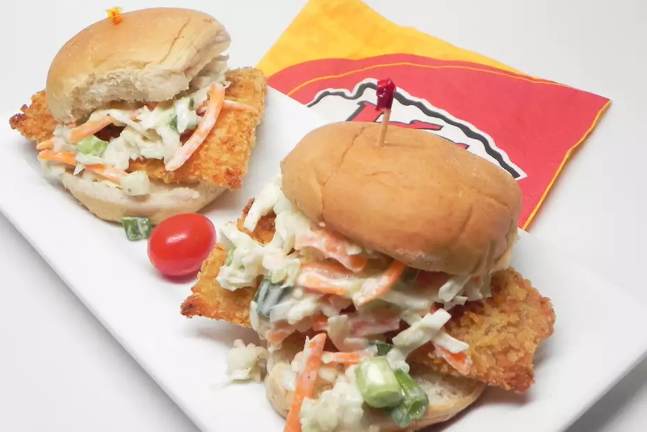

Fish and Chips Sliders

Description
A twist on the classic flavors of fish and chips in a hand-held slider. Unlike the traditional dish, this fish is baked instead of fried, and the coleslaw is dressed with Greek yogurt instead of mayonnaise, resulting in a much healthier alternative.
Ingredients
- cooking spray
- 1 (8.5 ounce) bag malt vinegar-and-sea salt chips (such as Kettle Brand®)
- 3 egg whites
- 1 pound cod fillets, cut into 4-inch pieces and excess moisture pressed out
- 3 cups coleslaw mix
- 2 green onions, chopped
- ⅓ cup plain Greek yogurt
- 2 tablespoons honey mustard
- 1 tablespoon apple cider vinegar
- ½ teaspoon celery seed
- 1 pinch salt and ground black pepper
- 8 slider buns
Steps
- Beat egg whites together in a bowl. Dip a piece of fish in egg white, coat in chip crumbs, and place on the prepared rack. Repeat with remaining fish. Spray fish with cooking spray.
- Bake in the preheated oven for 15 minutes. Turn on the broiler and broil fish until brown and crispy, about 5 minutes.
- While fish is cooking, combine coleslaw mix and green onions in a large bowl. Whisk yogurt, honey mustard, vinegar, celery seed, salt, and pepper together in a separate bowl. Pour dressing over coleslaw mix and toss to combine.
- Place a piece of fish on the bottom half of each slider bun and top with coleslaw.
Return to main page